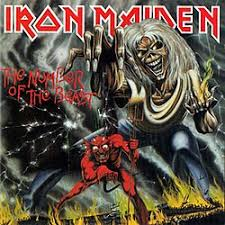

Brave New World (2000)
Powerslave (1984)
The Number of the Beast (1982)
Formada em 1975, a banda britânica Iron Maiden é um dos pilares do heavy metal...
"As areias do tempo estão se esgotando para mim..."
O vocalista Bruce Dickinson é também piloto de avião.
A banda é conhecida por sua energia nos shows.
Eddie é o mascote icônico da banda.
"The Number of the Beast" gerou controvérsias.
Voltar